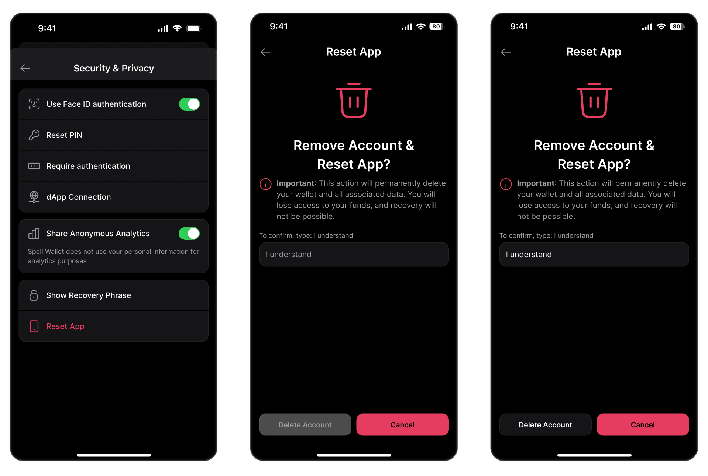

Spell Wallet is a secure MPC (Multi-Party Computation) wallet. Unlike traditional wallets that use a single seed phrase, Spell Wallet uses seed shares — one stored on your device and the other on Spell Wallet’s servers.
If you decide to stop using Spell Wallet and want to remove all personal data, you can use the Reset App feature.
Resetting the app is permanent and irreversible.
Once the reset is complete, you will not be able to recover your wallet or funds.
Follow these steps:

After the reset, the app will restart and return to the welcome screen. From there, you can create a new wallet or sign up again.